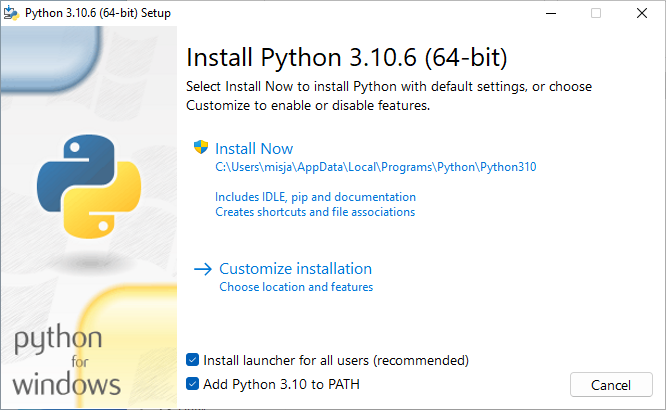

Terminal, teksteditors en Python#
Het doel van deze opgave is om:
Te zorgen dat je Python en een teksteditor geïnstalleerd krijgt op je computer
Om je kennis te laten maken met een command-line interface, het bewerken van tekstbestanden, en Python
Om een “Hallo”-programma te lezen, bewerken en uitvoeren in Python
De software installeren#
Welke software gebruiken we?#
We gebruiken bij Programmeren software die je misschien nog niet hebt. Je hebt de volgende programma’s nodig:
Python; wij gebruiken de laatste versie van python.org.
Een teksteditor; geen tekstverwerker; om je Python-bestanden te bewerken. We raden VSCode aan, een gratis, veel gebruikte tekstverwerker die beschikbaar is voor alle besturingssystemen (macOS, Windows en Linux). Als je al een favoriete teksteditor hebt, kan je die ook gebruiken.
Downloaden en installeren#
Download en installeer Python van python.org.
Pas op
Tijdens het installeren zal worden gevraagd of je Python aan PATH zou willen toevoegen, kies hier voor!

Sinds macOS 11.0 (“Big Sur”) is Python versie 3 op macOS standaard geïnstalleerd maar dit is vaak een oudere versie. We raden je aan de laatste versie van python.org te downloaden en te installeren.
Linux gebruikers hebben het gemakkelijker, als je een up-to-date distributie als bijvoorbeeld Ubuntu, Mint of Arch hebt dan zal je ook een recente Python versie standaard al geïnstalleerd hebben. Controleer dit als volgt op een terminal:
python3 --version
Wacht, ik heb Python al…#
Geen probleem! Zorg er in ieder geval voor dat het een recente versie is.
VSCode installeren#
Visual Studio Code (VSCode) is een gratis teksteditor, met hulpmiddelen voor het bewerken van software broncode, bijvoorbeeld Python.
Download en installeer VSCode van https://code.visualstudio.com/.
VSCode als editor gebruiken#
Probeer VSCode, een teksteditor.#
Teksteditors zijn niet hetzelfde als tekstverwerkers.
Microsoft Word, Google Docs, Pages van Apple of elke andere tekstverwerker kan tekst mooi opmaken
Maar ze geven je geen rechtstreekse toegang tot de daadwerkelijke inhoud van een bestand!
Ze bevatten speciale, onzichtbare tekens met informatie over de opmaak
Aangezien programmeertalen platte tekst (strings met karakters) gebruiken, zijn (platte-)teksteditors de geschikte tool om in te programmeren!
Start dus je teksteditor op; vermoedelijk VSCode, als je die net geïnstalleerd hebt…
Sluit de introductietabs (je kan VSCode vertellen deze niet meer te tonen) en zorg dat je een “leeg bestand†(een leeg venster) ziet.
Type daarna wat tekst, zoals bijvoorbeeld:

Sla dit bestand op als
intro.txtDat kan op je bureaublad of in een speciale map voor Programmeren I; dat mag je zelf bepalen. Dit ziet er dan ongeveer zo uit:

Automatisch opslaan!; het is een goed idee om VSCode in te stellen zodat deze al je bestanden automatisch opslaat Deze optie kan je hier vinden:

We gaan nu je vensters herschikken zodat je efficiënter kan gebruiken; als je aan het programmeren bent kan het erg veel helpen als je zorgt dat de goede vensters tegelijk zichtbaar zijn!
Vensters herschikken! (dit is handig!)#
Probeer je vensters zo te herschikken en in grootte aan te passen zodat je tegelijk je browser (met deze instructies) en je teksteditor, naast elkaar, kan zien.
Het is belachelijk hoe veel efficiënter je wordt als je niet steeds tussen vensters hoeft te wisselen.
Mocht je artistiek zijn of van kookprogramma’s houden: mise-en-place is belangrijk!
Hier is een voorbeeld van een Mac-omgeving:

Neem even een kijkje in de menu’s van VSCode. Je kan bijkvoorbeeld in View de optie Hide Status Bar en Hide Activity Bar kiezen, maar het kleurenschema veranderen is nog leuker!
Kleurenschema! Besteed niet te veel tijd hieraan, maar voel je vrij om je favoriete kleurenschema te kiezen voor VSCode (menu’s: File/Code … Preferences … Color Theme). Dit is erg leuk, misschien zelfs te leuk…
Hierna ga je een terminalvenster openen…
Het terminalvenster!#
Terminalvenster?
De meeste interacties die we met computers hebben zijn via vensters die door het besturingssysteem aangeboden worden. Het besturingssysteem (of OS, kort voor operating system), is meestal Windows of Mac OS, maar er zijn vele andere, waarvan Linux de meest voorkomende is. Het besturingsysteem dat je gebruikt voorziet in een venstersysteem waardoor je een muis kan gebruiken, op een gebruikersvriendelijke manier kan interacteren met de computer, en zelfs films kan bekijken. De klik-en-sleepinterface van moderne venstersystemen is zeker heel erg handig!
Echter, de grafische interface is ook een gordijn, dat de gebruiker afschermt van wat er echt gebeurt met de bestanden op het systeem. Het is een krachtige en nuttige vaardigheid om een duidelijk idee te hebben van hoe bestanden gebruikt worden achter het gordijn van het venstersysteem. De terminal is een programma dat “achter†het gordijn kijkt. Hij gebruikt tekstcommando’s op de zogeheten “command line†(of commandoregel) om bestanden en acties op je computer aan te spreken.
Je op je gemak voelen op de command line is vaak handig om programma’s te maken. Het besturingssysteem is erg geschikt voor het gebruiken van programma’s!
Start je terminal op!
Trek nu het “gordijn†van je besturingsysteem weg door naar de teksteditor VSCode te gaan en in het menu daarvan View en dan Terminal te kiezen. Je scherm wordt nu opgesplitst:

De bovenste helft is nog steeds de teksteditor.
De onderste helft is nu je terminalvenster. De terminal heeft vele namen:
De terminal
De shell
De command line
Als dit de eerste keer is dat je de terminal gebruikt, goed bezig!
De terminal en de command-line#
Alles wat je kan doen met de vensters van je besturingssyteem kan je ook met de terminal en de command-line doen. (Sterker, je kan nog veel meer met de command line doen…)
Bij dit vak heb je drie terminalcommando’s nodig. We behandelen ze alledrie kort. Hier is een kort overzicht:
pwd; kort voor print working directory. Het drukt je huidige locatie (map) af.ls; kort voor list (files). Het drukt een lijst af van alle bestanden in de huidige locatie.cd; kort voor change directory. Het laat je van map naar map door je computer navigeren.
pwd#
Eerst zie je de prompt. De prompt is het stukje tekst aan de linkerkant dat wacht totdat je wat op de command line typt en dit zal er voor Windows, macOs en Linux nét iets anders uit zien (die van macOS en Linux lijken op elkaar omdat deze besturingssystemen familie van elkaar zijn!). Dat het op input wacht kan je zien aan de knipperende cursor (het knipperende blokje).
PS C:\Users\misja>
misja@MacBook-Air ~ %
misja@selenix:~$
Het commando pwd staat voor print working directory. Het drukt je huidige locatie (map) af. Probeer het:
PS C:\Users\misja> pwd
Path
----
C:\Users\misja
PS C:\Users\misja>
misja@MacBook-Air ~ % pwd
/Users/misja
misja@MacBook-Air ~ %
misja@selenix:~$ pwd
/home/misja
misja@selenix:~$
Je ziet de locatie waarin je terminal en command line op dit moment actief is. Waarschijnlijk zal je een iets ander resulaat zien, behalve als je naam toevallig misja is 😉
Merk ook op dat een volgende prompt verschenen is, die op een volgend commando wacht…
De uitvoer is de naam van de map waar je je momenteel bevindt in de terminal. “Map†en “directory†betekenen hetzelfde.
De slashes / scheiden submappen van de map waar ze in zitten. Op Windows zie je meestal backslashes \ of dubbele backslashes; dit verschil is niet belangrijk.
In alle voorbeelden is de gebruiker in een submap met de naam misja op de harde schijf. Dit zal jou “home directory†zijn, de plek waar al jouw bestanden staan.
We gaan nu kijken wat we hier kunnen vinden met het commando ls…
ls: het list-commando#
Het commando ls staat voor list.
Als je ls uitvoert toont dit een lijst van alle bestanden en mappen in je huidige directory. Een voorbeelduitvoer van ls is:
PS C:\Users\misja> ls
Directory: C:\Users\misja
Mode LastWriteTime Length Name
---- ------------- ------ ----
d-r--- 9/26/2022 12:32 AM Contacts
d-r--- 10/23/2022 8:10 PM Desktop
d-r--- 10/23/2022 9:15 PM Documents
d-r--- 8/30/2023 9:03 PM Downloads
d-r--- 9/26/2022 12:32 AM Favorites
d-r--- 9/26/2022 12:32 AM Links
d-r--- 9/26/2022 12:32 AM Music
d-r--- 9/25/2022 11:55 PM Pictures
d-r--- 9/26/2022 12:32 AM Saved Games
d-r--- 9/25/2022 11:48 PM Searches
d-r--- 10/7/2022 8:45 PM Videos
PS C:\Users\misja>
misja@MacBook-Air ~ % ls
Desktop Documents Downloads Library Movies Pictures Public
misja@MacBook-Air ~ %
misja@selenix:~$ ls
Desktop Documents Downloads Movies Music Pictures Public
misja@selenix:~$
De uitvoer is een lijst van alle bestanden en (sub)mappen in de huidige directory (Ter herinnering, “directory†en “map†zijn hetzelfde; de begrippen worden beide gebruikt.)
Probeer het commando om een lijst van de namen van bestanden en submappen in je huidige directory te zien in de terminal, bijvoorbeeld
Tip
Met ls kan je ook de inhoud van een submap bekijken door het de naam van deze map mee te geven als extra argument, bijvoorbeeld
ls Desktop
Nu ga je door de directory’s heen “bewegen†met cd…
cd: het change-directory-commando#
Het commando cd is het belangrijkste. Het staat voor change directory.
Het commando cd laat je van je huidige map naar andere mappen (directory’s) op je computer navigeren. Om het te gebruiken moet je natuurlijk wel weten waar je heen wilt gaan!
Je kan bijvoorbeeld het bureaublad (Desktop) proberen … typ dus cd Desktop in:
PS C:\Users\misja> cd Desktop
PS C:\Users\misja\Desktop>
misja@MacBook-Air ~ % cd Desktop
misja@MacBook-Air ~/Desktop %
misja@selenix:~$ cd Desktop
misja@selenix:~/Desktop$
Er is niet veel gebeurd … tot je pwd intypt en ziet dat je ergens anders bent! En als je goed kijkt zal je ook zien dat de prompt is veranderd en jou laat weten dat je nu in een andere directory bent …
Als je nu ls typt zouden er veel meer bestanden kunnen zijn maar dat hangt er een beetje vanaf hoe rommelig je bureaublad is! Probeer het maar!
ls
Je gaat je nu “omhoog†verplaatsen in de directorystructuur…
cd ..: een map “omhoog†gaan#
Ok, je bent naar het bureaublad (Desktop) ge-cd’d, maar hoe ga je terug?!
De speciale directorynaam met twee punten achter elkaar .. betekent “één directory omhoog”.
Als je dus cd .. intypt en op return drukt ben je terug in de map die je bureaublad bevat:
cd ..
Probeer nu pwd en ls om er zeker van te zijn dat je weer terug bent!
Oefenen!#
Probeer de volgende commando’s op jouw computer. Twijfel je bij elke stap waar je je nu bevindt? Gebruik dan altijd pwd om het te controleren!
cd
Het commando cd is zonder de naam van een directory waar je naartoe wilt? Dit is geen typfout! Het commando cd zonder een argument zal altijd cd-en naar jouw home directory en is de meest snelle manier om weer ðŸ te komen 😊
cd Documents
Welke interessante bestanden heb jij in deze directory staan? Gebruik ls!
ls
En maar weer een stap terug, waar je net vandaan kwam …
cd ..
Ben je nu weer terug in jouw home directory? Controleer het met pwd …
pwd
Dat is alles! Je kan nu de command line gebruiken. Er zijn een paar erg handige shortcuts die de command line veel efficiënter maken; efficiënter dan de drag-en-drop-vensterinterface! Een paar voorbeelden:
tab completion Typ
cd Desals je in je home directory staat en druk op de tab-toets. De command line zal je commando proberen aan te vullen. Ervaren (en luie!) gebruikers zullen lange namen bijna altijd met tab afmaken, in plaats van ze te typen. Het kan je veel tijd schelen!pijltje omhoog en pijltje omlaag De pijltje-omhoog- en pijltje-omlaag-toetsen onthouden wat je eerder gedaan hebt. Nadat je een commando hebt gebruikt, kan je deze met pijltje-omhoog terughalen. Je kan het ook bewerken (pijltje-links en pijltje-rechts werken hier ook) als je een fout maakt.
Ok! We zijn nu klaar voor Python.
Python in een bestand uitvoeren#
We hebben al een teksteditor open staan!
Maak dus in een nieuwe tab een nieuw, leeg bestand (via het menu File en daaronder New File)
Plak (of typ) onderstaande code in het nieuwe bestand
# Programmeren I, Practicum 0
# Naam:
# Probleemomschrijving: Hello world
print("Hello World")
Sla dit bestand op als hello.py in je programmeer folder.
Hierna kan je je Python-programma’s overal opslaan; het is handig om ze te organiseren in mappen.
Vergeet niet om de extensie
.pytoe te voegenAls je het bestand opslaat met de extensie
.py(zoals we dat noemen), zie je dat de Python-code gekleurd wordt.Dit wordt ook wel syntax highlighting genoemd
Als je code niet kleurt, vraag het ons! Het is belangrijk dat je deze kleurrijke aanwijzingen hebt voor de structuur van je programma. Hier is een voorbeeld:

Windows-gebruikers: stel Windows in om extensies te tonen!
Als je Windows gebruikt, is het nodig dat je het tonen van bestandsextensies (zoals
.py,.txten.doc) aanzet, in ieder geval tijdens deze twee blokken.Het kan verwarrend zijn als Windows de extensies verbergt, omdat de
.py- of.txt-extensie die je nodig hebt er wel of niet kan zijn.Als je mappen in Windows de bestandsextensie
.pyniet tonen, zet dan alle bestandsextensies aan door de instructies op deze pagina te volgen
Een bestand uitvoeren!
Om een bestand uit te voeren, moet je weer naar de terminal gaan.
Type
ls( mac) ofdir(windows) om de bestanden in de huidige directory te zienZorg dat je je bestand
hello.pyziet!Als je hem niet zien, gebruik dan
cd ..ofcd Desktopof andere combinaties om naar de juiste directory te gaan. Vraag om hulp als je het bestand niet kan vinden!
Typ op de prompt
python hello.py(je kan hier tab completion voor gebruiken)Dit voert het bestand
hello.pyuit.Als alles goed gaat wordt het programma uitgevoerd en zie je de uitvoer.
Vraag het ons als dit niet gebeurt!
Je kan nu je bestand bewerken, opnieuw opslaan en pijltje omhoog drukken om het opnieuw uit te voeren.